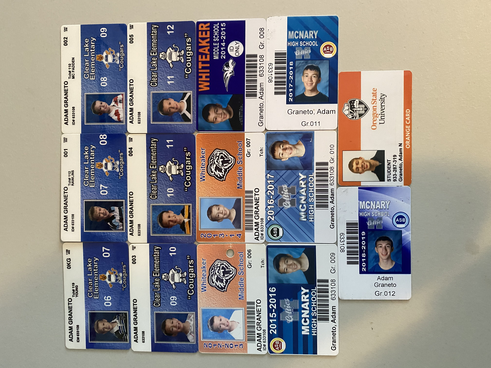

Adam Graneto's final project for Biology 103: Human Anatomy, Physiology, Disease, and Health.
This objective is "Biology Concepts" which is about my ability to describe and explain concepts related to life.
My first piece of work is my quiz answer on the life of a cell, which shows my mastery of the course objective because it demonstrates my ability to describe concepts about cells and their importance to life.
Through a cell's life it goes through four main processes. To begin, the cell will go through the process of mitosis, where one parent cell divides into two daughter cells. This is done by duplicating its chromosomes, then the nuclear membrane falls apart, the sets of chromosomes then line up in the middle of the cell, separate, and go to the opposite ends of the cell, next the plasma membrane pinches the cell in the middle while a nuclear membranes form around each set of chromosomes, and finally the cell splits into two daughter cells, each with its own chromosomes and organelles. As time goes on the cell goes through two processes. The cell will go through the process of hypertrophy, thus growing over time. In addition, the cell will also go through a process of differentiation, where the cell changes its structure and function. Finally, as the cell nears the end of its life, it will go through the process of apoptosis, which is where the cell is programmed to eventually die at a certain time.
My second piece of work is my media piece demonstrating the life stages a human goes through, which shows my mastery of the course objective because it provides an example of how humans change as they grow through life.
I saved my school ids every year from kindergarten to my first year of college. Each id comes with a photo of me and it is always interesting to see how much I have physically changed and grown over time. It also contains the years I was in each grade, which helps to show a rough overview of my education journey throughout my life. It also reminds me of how my interests and my general philosophy of life has changed and evolved over time.